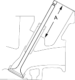

- Insert the intake and exhaust valves in the head and measure the valve stem installed height (A).
Valve Stem Installed Height:
| Standard (New): | 53.17 - 53.64 mm
(2.093 - 2.112 in.) |
| Service Limit: | 53.89 mm (2.122 in.) |

- If the valve stem installed height is over the service limit, replace the valve and recheck. If it is still over the service limit, replace the cylinder head; the valve seat in the head is too deep.